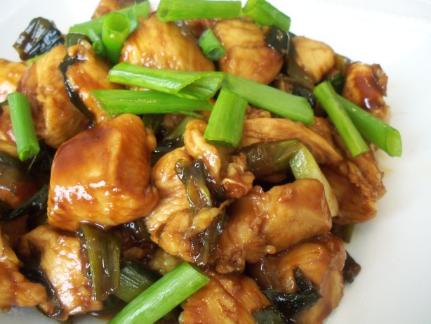

Scallions (Spring Onion/ Green Onion) - 1 bunch (sliced)
Chicken - 1 lb (boneless, skinless)
Ginger garlic Paste - 1 tsp
Red Chilly Powder - 1/2 tsp
Black Pepper Powder - 1/2 tsp
Turmeric Powder - a pinch
Coriander Powder - 1/2 tsp
Garam Masala - 1/4 tsp
Lemon Juice - 3 tsp
Salt - as needed
Oil - 2 tbsp
Clean the chicken and cut it into strips. Add the lemon juice, ginger garlic paste, coriander powder, black pepper powder, turmeric powder, red chilly powder and garam masala to the chicken.
Mix it thoroughly and let it marinate for at least half an hour.
Heat oil in a wok / kadai. Add the white portion of the spring onions and stir fry for a couple of minutes.
Next add the marinated chicken and fry on medium high flame till the chicken is cooked. This should take about 5-7 minutes.
Add the green leaves of the scallions and continue to stir fry. All the moisture from the chicken should dry out.